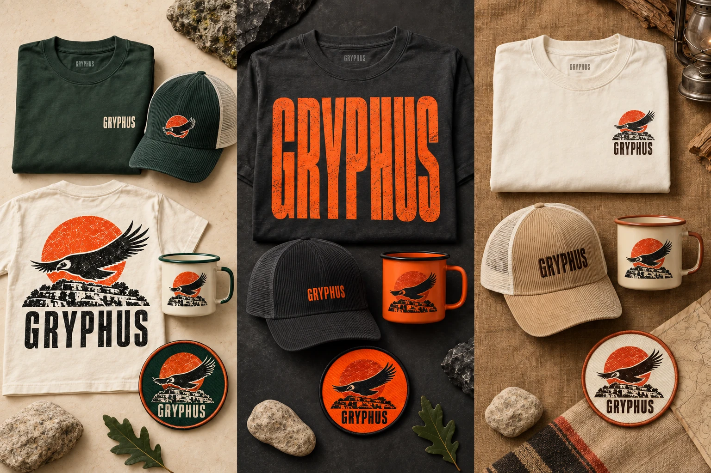
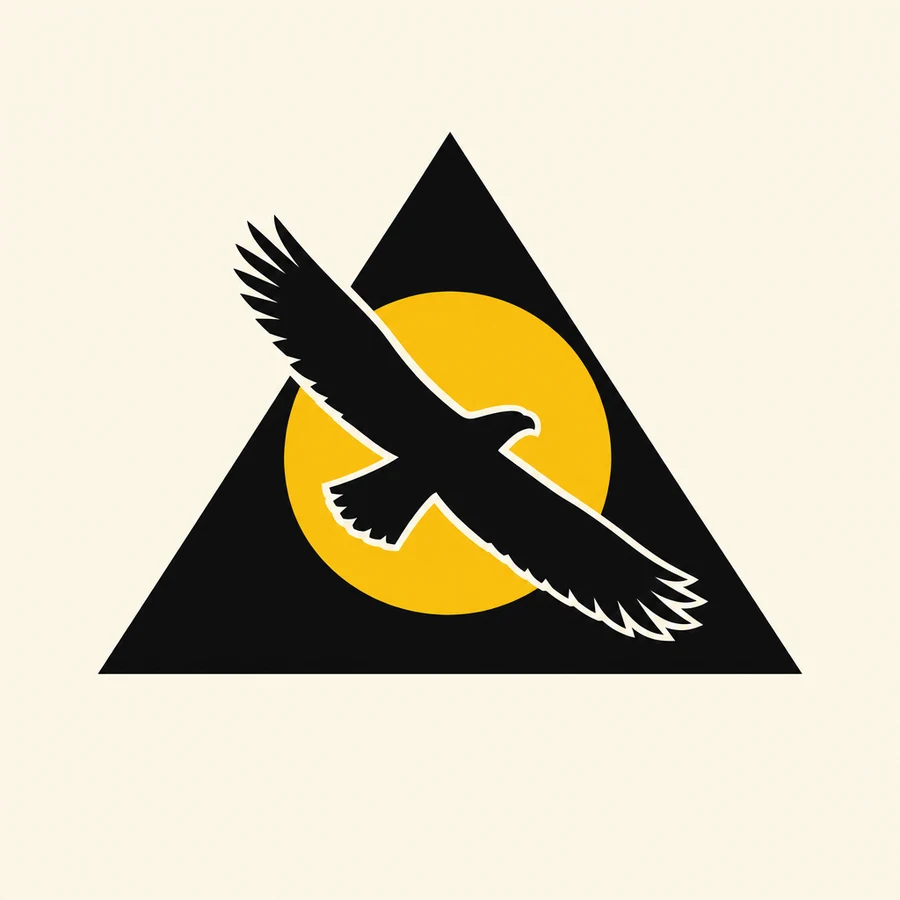

CALE + WALT / YOUR WORLD, BROUGHT TO LIFE.
THREE WAYS
TO TAKE FLIGHT.
Choose a direction. Play with the full site.
Five outdoor collections. Three cleaner marks.
Tell us what feels like Gryphus.
Open the experiences. Hear the mood. Build your weekend.
Choose Field Guide ↓THREE ORIGINAL COLLECTIONS / EXPLORE FURTHER
TAKE THE
WEEKEND HOME.
Pick a collection, or mix your favorites.
These are design visions for Cale’s review.

Concept mockups, not items for sale. Product specifications and artwork need a supplier proof before production.
OPTIONAL / EARLIER STUDIES + WEEKEND IDEASMore to explore, when you’re ready.
Darby’s two earlier mark studies and six programming ideas. Keep any that speak to you; your choices join the same feedback below.
THE BIRD AND THE SUN, DRAWN AGAIN.
TWO EARLIER
MARK STUDIES.
These remain separate from the three current vector logo choices above.

Keep the triangle.
A geometric triangle, a gold sun and a keyline separating the bird. An exploration of continuity with the 2026 mark.
See the second variation ↗
The wings are the hills.
A head-on bird, outstretched wings and three contours. This explores the tagline visually and moves farther from the earlier triangle.
See the second variation ↗These are raster studies, not production masters. The condor interpretation is a creative possibility; Cale and Walt should confirm the intended meaning of the name. Any selected study needs vector artwork and a supplier proof.
This answer does not change your current vector logo preview.
SUGGESTIONS FOR CALE + WALT, NOT BOOKINGS.
SIX THINGS
WORTH A LOOK.
Select the ideas you would like to explore. None is a confirmed part of the program.
A programming thought to consider: choose a few moments that fit the character and capacity of the weekend. These can refine an existing pillar rather than add six more commitments. Site access, partners, staffing and budgets still need review.
MAKE IT YOURS.
WHAT FEELS
LIKE GRYPHUS?
Keep a whole direction or mix the parts you love.
Your selection and notes become one simple reply.
FROM THE FIRST IDEA TO THE REAL WORLD.
A WHOLE WORLD.
ONE CLEAR IDENTITY.
Corrected lettering. Every experience. A cleaner, usable visual system.
Explore the board ↗02 / READY FOR YOUR COLLABORATORSThe designer’s guideIdentity, color, type, photography, partner use, signage and merchandise.
Open the style guide ↗03 / PEOPLE WHO COULD HELP BUILD THISCale’s partner dossierRunningman’s partner roster, public contact routes and San Antonio-area possibilities.
Explore the prospects ↗04 / THE PATH TO A WEEKENDTicket flow previewTry pass selection, quantities, stay options and a clear order review.
Try the ticket flow ↗What is established, and what is still being explored? +
Dates: April 30 to May 2, 2027. Place: Flat Rock Ranch, Comfort, Texas. Walt curates the music; Cale is executive producer. The experiences visualize Cale’s 2027 creative direction. Lineup, tickets, race entries, camping arrangements, partner commitments and operational policies still need event-specific confirmation.
Generated campaign art is labeled as concept imagery. Gordon and Cale’s April 2026 photograph is a real memory. No sponsor affiliation is asserted. The original bird-and-sun concept stays central; the founder story behind the name is a useful next conversation.